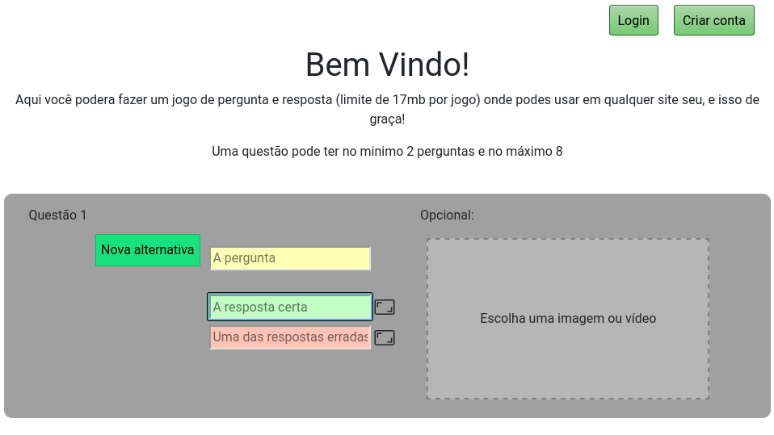
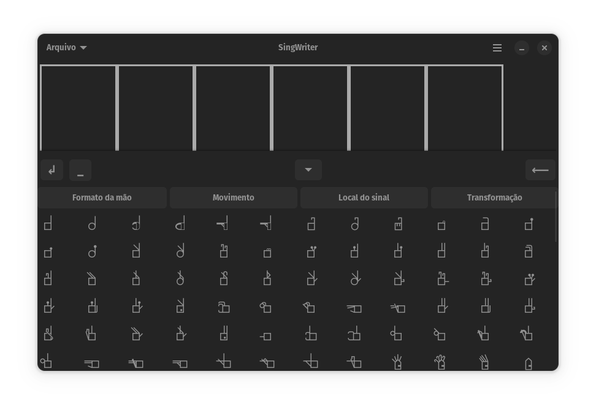
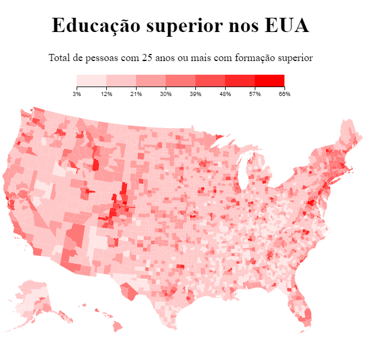
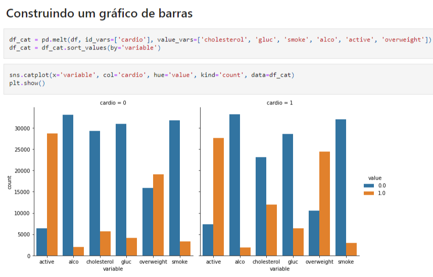

Alguns projetos
-

Site para criar e editar jogos simples de botões. Abaixo, há um exemplo de jogo
criado com ele. Desenvolvido com JS, CSS, EJS e Node.js, além de
bibliotecas como MongoDB, Express e Bootstrap.
-  Aplicativo para escrever em SingWriting no computador e depois exportar o texto em PDF. Feito para o formato flatpak (formato popular em desktops linux), ambiente gráfico GNOME com as bibliotecas Gtk4 e Libadwaita.
-  Site com um mapa coroplético que destaca as regiões com maior nível de educação superior nos EUA, desenvolvido com JS e a biblioteca D3.js.
-  Notebook que analisa dados de um banco de dados sobre a saúde das pessoas, desenvolvido com Python e as bibliotecas Pandas, Matplotlib e Seaborn